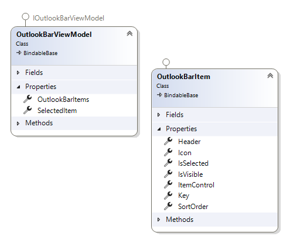
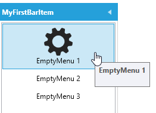
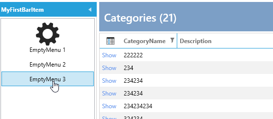
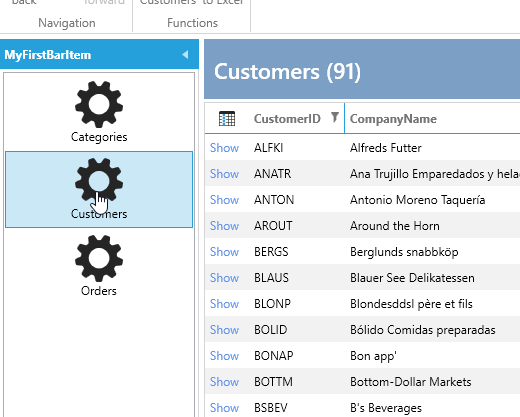
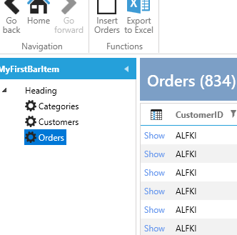

OutlookBar
The OutlookBar is implemented in the MainWindow and is data-bound to an OutlookBarViewModel, which is injected into the MainWindowViewModel.
Here is a diagram of the OutlookBarViewModel:

The OutlookBarViewModel has a collection of OutlookBarItem elements, allowing you to add items to this collection.
Each OutlookBarItem has a property called ItemControl, which represents the UserControl that will be displayed within the item.
To add a simple OutlookBarItem, you can do this in the MainWindowViewModel:
outlookBarViewModel.OutlookBarItems.Add(new OutlookBarItem()
{
Header = "MyFirstBarItem",
ItemControl = new MyOutLookBarView()
});
MyOutLookBarView is a basic UserControl with a TextBlock, which looks like this:

However, this approach is not very MVVM-friendly. To improve it, you can use the OutlookBarService.
OutlookBar Service
In a module, you can override the ConfigureOutlookBarService method as follows:
protected override void ConfigureOutlookBarService(IOutlookBarService outlookBarService)
{
outlookBarService
.AddOutlookBarItem(new OutlookBarItem() { Header = "MyFirstBarItem" })
.WithView<MyOutLookBarView>();
}
Now, the view is activated by the IServiceProvider.
In most cases, your OutlookBar will display either a list of menus or a TreeView with menus.
WithSimpleMenuView
To simplify this process, extensions and builders are available.
To create a simple list of menus, use this code:
protected override void ConfigureOutlookBarService(IOutlookBarService outlookBarService)
{
outlookBarService
.AddOutlookBarItem(new OutlookBarItem() { Header = "MyFirstBarItem" })
.WithSimpleMenuView()
.AddMenuItem(new MenuItemViewModel() { Title = "EmptyMenu 1", ImageSource = ImageProvider.GetImage(Innova.Prism.Library.Styles.WindowsMenuImages.gear_Keyname)?.Source })
.AddMenuItem(new MenuItemViewModel() { Title = "EmptyMenu 2" })
.AddMenuItem(new MenuItemViewModel() { Title = "EmptyMenu 3" });
}
This code results in the following menu:

You can also turn both OutlookBarItem and MenuItem into classes activated by the IServiceProvider.
Here are the OutlookBarItem and Menu3 classes. This allows you to inject dependencies, such as the IEventAggregator, into the constructor of Menu3:
public class MyFirstBarItem : OutlookBarItem
{
public MyFirstBarItem()
{
Header = "MyFirstBarItem";
SortOrder = 1;
Icon = ImageProvider.GetImage(Innova.Prism.Library.Styles.WindowsMenuImages.gear_Keyname)?.Source;
}
}
public class EmptyMenu3 : MenuItemViewModel
{
private readonly IEventAggregator _eventAggregator;
public EmptyMenu3(IEventAggregator eventAggregator)
{
_eventAggregator = eventAggregator;
Title = "EmptyMenu 3";
}
protected override void ExecuteCommand()
{
_eventAggregator.PublishListShowEvent<Data.Entity.Categories>();
}
}
To use these classes, configure them like this:
protected override void ConfigureOutlookBarService(IOutlookBarService outlookBarService)
{
outlookBarService
.AddOutlookBarItem<MyFirstBarItem>()
.WithSimpleMenuView()
.AddMenuItem(new MenuItemViewModel() { Title = "EmptyMenu 1", ImageSource = ImageProvider.GetImage(Innova.Prism.Library.Styles.WindowsMenuImages.gear_Keyname)?.Source })
.AddMenuItem(new MenuItemViewModel() { Title = "EmptyMenu 2" })
.AddMenuItem<EmptyMenu3>();
}
Now, when you click Menu3, the list of Categories is displayed:

In most cases, you want to show a list when a menu is clicked. There are extensions for this purpose:
protected override void ConfigureOutlookBarService(IOutlookBarService outlookBarService)
{
outlookBarService
.AddOutlookBarItem<MyFirstBarItem>()
.WithSimpleMenuView()
.AddMenuWithShowList<Data.Entity.Customers>()
.AddMenuWithShowList<Data.Entity.Orders>()
.AddMenuWithShowList<Data.Entity.Categories>();
}
The result looks like this:

You can also present it as a TreeView to create a hierarchy of menu items.
WithTreeMenuView
To create a hierarchical menu, use the following code:
protected override void ConfigureOutlookBarService(IOutlookBarService outlookBarService)
{
outlookBarService
.AddOutlookBarItem<MyFirstBarItem>()
.WithTreeMenuView()
.AddMenuItem(new MenuItemViewModel() { Title = "Heading" },
subbuilder => subbuilder
.AddMenuWithShowList<Data.Entity.Customers>()
.AddMenuWithShowList<Data.Entity.Orders>()
.AddMenuWithShowList<Data.Entity.Categories>());
}
The resulting menu looks like this:

In this example, we changed WithSimpleMenuView to WithTreeMenuView, added an empty MenuItem, and then added three sub-menu items under that heading.